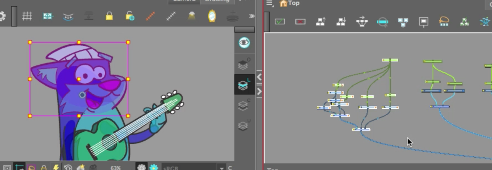
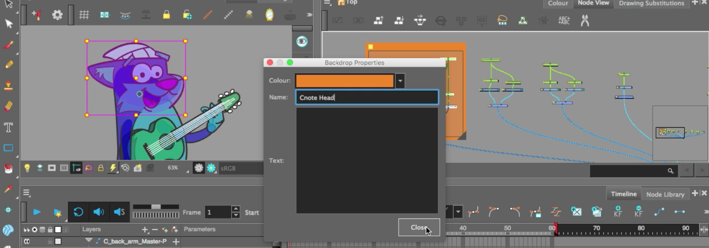
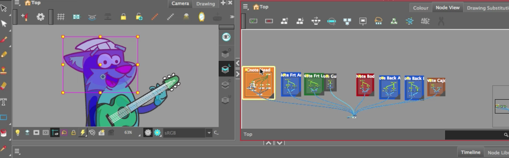
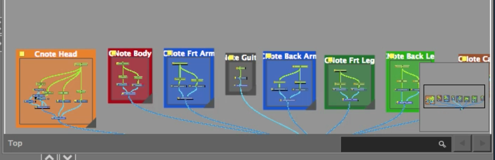
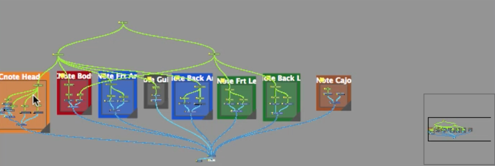

About this Lesson:
In the last lesson you prepared a cut out character using composites and pegs. In this lesson you will learn how to parent and create master pegs in Harmony to prepare your character to be animated.Lesson Duration: 8 hours
Harmony Topics:
- Hierarchy: If there is a layer hierarchy in the puppet you built, use the keyboard shortcuts to travel up and down the parent-child chain. You can navigate between the children of the same parent. You can also easily center on your selection in the Timeline or Node view.
- Parent and Children: When animating, large movements that are made at the root (parent) of a chain cause secondary movements throughout the rest (children) of the chain. For example, when you rotate the arm of a character from the shoulder, the forearm and hand will follow. However, in order to make the movement appear natural and graceful, the forearm and hand should not move at the same speed or angle. As a result, animators often need to move up and down a chain, intermittently selecting parent and children, in order to make both large and fine movements.
- Master Peg: Your character rig should always have a master peg which connects to all of its parts. The master peg allows you to manipulate the entire rig from a single layer, without having to manipulate each individual part. This is useful for positioning and scaling your character relative to the scene, as well as to animate your character's trajectory when it has to move between areas of the scene.
Task:
-
Download the support files from the Lesson Files.
-
Watch, complete and take notes on the Rigging A Character video tutorial and the topics presented in this lesson. Taking notes in your sketchbook/notebook on how to use Harmony and any animation terminology will help you prepare for your certification exam at the end of this course.
Please Note: The cut out pieces of CNote are setup to be transparent to help you learn how to set up the rigged character.
Part 1 - Adding Master Pegs and Backdrops in Node View:
-
Launch Toon Boom Harmony.
- In the Welcome Window, open 12_rigging_cnote
- Be sure to save your Harmony file as: YourName_Rigging in your Documents folder.
- Take some time to investigate the construction of the Timeline layers and the Node View. You may. also want to review your notes from the previous lesson.
Hint: Space bar is freehand, 1 is Zoom out and 2 is Zoom in. These shortcuts will help you navigate the Node view.
Head Master Peg:
- Go to Node View. Select, copy and paste the C_Head peg (as we want to copy the pivot point of the Head peg). Rename C_Head-MasterPeg
- Reposition the C_Head-MasterPeg higher in the node view.
- Connect waypoints from the new C_Head-MasterPeg to the Head Peg, the Mouth Peg, the eyes peg and eyeballs peg. The C_Head-MasterPeg will control all the head art.
- Drag the cursor over the entire Head section in the Node View. In the Menu drop down, go to Insert/Backdrop.

- Right click the yellow square on top left of the backdrop to rename the Backdrop CNote Head and reassign the colour to match the Timeline colour (orange).
- Reposition Back drop to a new location.

Front Leg Master Peg:
- Select, copy and paste the C_front_leg peg.
- Rename C_Front_leg-MasterPeg
- Reposition the C_Front_leg-MasterPeg in the node view (so it is easier to work with them).
- Connect waypoints from the new C_Front_leg-MasterPeg to the Front Leg Peg, and the Front Foot Peg. The C_Front_leg-MasterPeg will control all the front leg art.
- Drag the cursor over the entire Front Leg section in the Node View. In the Menu drop down, go to Insert/Backdrop.
- Right click the yellow square on top left of the backdrop to rename the Backdrop CNote Front Leg and reassign the colour to match the Timeline colour (green).
- Reposition Back Drop to a new location.
- Select, copy and paste the C_front_arm peg.
- Rename C_Front_arm-MasterPeg
- Reposition the C_Front_arm-MasterPeg in the node view.
- Connect waypoints from the new C_Front_arm-MasterPeg to the Front Arm Peg, and the Front Hand Peg. The CC_Front_arm-MasterPeg will control all the front arm art.
- Drag the cursor over the entire Front Arm section in the Node View. In the Menu drop down, go to Insert/Backdrop.
- Right click the yellow square on top left of the backdrop to rename the Backdrop CNote Front Arm and reassign the colour to match the Timeline colour (blue).
- Reposition Back Drop to a new location.
- Select, copy and paste the C_Back_leg-Peg.
- Rename CC_Back_leg-MasterPeg
- Reposition the C_Back_leg-MasterPeg in the node view.
- Connect waypoints from the new C_Back_leg-MasterPeg to the Back Leg Peg, and the Back Foot Peg. The C_Back_leg-MasterPeg will control all the back leg art.
- Drag the cursor over the entire Back Leg section in the Node View. In the Menu drop down, go to Insert/Backdrop.
- Right click the yellow square on top left of the backdrop to rename the Backdrop CNote Back Leg and reassign the colour to match the Timeline colour (green).
- Reposition Back Drop to a new location.
- Select, copy and paste the C_back_arm peg
- Rename C_Back_arm-MasterPeg
- Reposition the C_Back_arm-MasterPeg in the node view.
- Connect waypoints from the new C_Back_arm-MasterPeg to the Back Arm Peg, and the Back Hand Peg. The C_Back_arm-MasterPeg will control all the back arm art.
- Drag the cursor over the entire Back Arm section in the Node View. In the Menu drop down, go to Insert/Backdrop.
- Right click the yellow square on top left of the backdrop to rename the Backdrop CNote Back Arm and reassign the colour to match the Timeline colour (blue).
- Reposition Back Drop to a new location.
- Select, copy and paste the C_body_arm peg.
- Rename C_body-MasterPeg
- Reposition the C_body-MasterPeg in the node view.
- Connect waypoints from the new C_body-MasterPeg to the Tail Peg, and the Body Peg. The C_body-MasterPeg will control all the body art.
- Drag the cursor over the entire Body section in the Node View. In the Menu drop down, go to Insert/Backdrop.
- Right click the yellow square on top left of the backdrop to rename the Backdrop CNote Body and reassign the colour to match the Timeline colour (red).
- Reposition Back Drop to a new location.
- Select, copy and paste the Guitar peg.
- Rename Guitar-MasterPeg
- Reposition the Guitar-MasterPeg in the node view.
- Connect waypoints from the newGuitar-MasterPeg to the Guitar Peg.
- Drag the cursor over the entire Guitar section in the Node View. In the Menu drop down, go to Insert/Backdrop.
- Right click the yellow square on top left of the backdrop to rename the Backdrop Guitar and reassign the colour to match the Timeline colour (grey).
- Reposition Back Drop to a new location.
- Create a peg for the Cajon. Rename Guitar-MasterPeg
- Drag the cursor over the entire Guitar section in the Node View. In the Menu drop down, go to Insert/Backdrop.
- Right click the yellow square on top left of the backdrop to rename the Cajon and reassign the colour to match the Timeline colour (brown).
- Reposition Back Drop to a new location.

- Select the backdrops and organize them so all the corresponding backdrop colours are in proximity. See the order in the screenshot below:

Upper Body Master Peg:
- Select, copy and paste the C_body-MasterPeg. Rename it Upper Body MasterPeg.
- Reposition the Upper Body MasterPeg in the node view.
- Connect waypoints from the new Upper Body MasterPeg to the C_body-MasterPeg, the C_Back_arm-MasterPeg, C_Head-MasterPeg, the C_Front_arm-MasterPeg , and the Guitar-MasterPeg.
- Paste the C_body-MasterPeg. Rename it Lower Body MasterPeg.
- Reposition the Lower Body MasterPeg in the node view.
- Connect waypoints from the new Lower Body MasterPeg to the C_body-MasterPeg, the C_Back_leg-MasterPeg, the C_Front_leg -MasterPeg , and the tail peg. To do this, disconnect the Tail Peg from Upper Body. Connect the waypoint from Lower Body MasterPeg to the tail peg.
- Paste the C_body-MasterPeg. Rename it CNote-MasterPeg.
- Reposition the Lower Body MasterPeg in the node view.

- Connect waypoints from the new CNote-MasterPeg to the Lower Body MasterPeg and the Upper Body MasterPeg
Part 3 - Presenting your work:
- Take a screenshot of your Node View demonstrating:
- Node View:
- Main Composite
- Head Composite
- Front Arm Composite
- Back Arm Composite
- Front Leg Composite
- Back Leg Composite
- Guitar Composite
- Body Composite
- Prop art layers
- Camera View with the Pivot Point set to the Body Composite
- Timeline with layers correctly labelled in Red, Orange, Blue, Gray and Green.
- Node View:
- Submit Rigging Layout screenshot below.